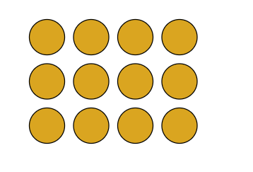

Definição. Se a e b são inteiros, dizemos que a divide b, denotando por a|b, se existir um inteiro c tal que b = a*c.
Por exemplo, 12 dividido por 4 = 3, pode ser interpretado por 12 bolinhas, dispostas em 4 colunas, cada coluna com 3 bolinhas de altura.
Convido o leitor a rodar o algoritmo abaixo:
Dados dois inteiros a e b, b>0, existe um único par de inteiros q e r tais que:
a = q*b+r,
com 0<= r < b
q é chamado de quociente e r de resto da divisão de a por b.
Outro exemplo: 8 dividido por 2 = 2 colunas com 4 bolinhas de altura (o quociente). No caso, o resto da divisão é zero.
Vejamos um caso com resto na divisão.
Para o caso 13 / 4, não consigo arrumar 13 bolinhas em 4 colunas. Consigo arrumar 4 colunas com 3 bolinhas de altura (quociente), e vai “sobrar” uma linha com uma bolinha. Essa “sobra” é o resto da divisão.
13 = 4*3 + 1
(numerador = denominador*quociente + resto)
Neste caso, é dito que 13 não é divisível por 4.
O algoritmo da divisão é base de todo o resto do livro, e dá para chegar à conclusões bastante complexas construindo o raciocínio, pouco a pouco.
Referência: Introdução à Teoria dos Números, José Plínio de Oliveira Santos, Instituto Nacional de Matemática Pura e Aplicada.
Veja também:
Forgotten Lore - Ideias Técnicas com uma pitada de filosofia.